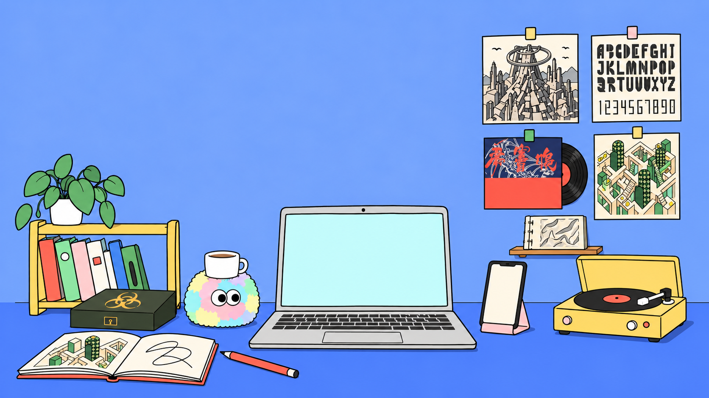
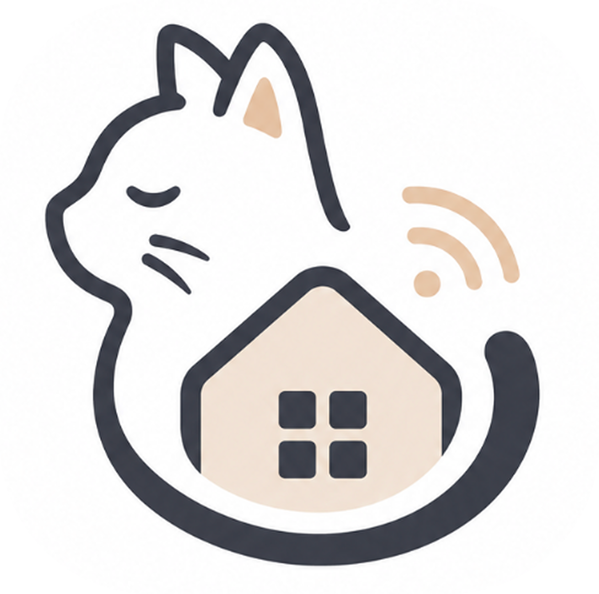
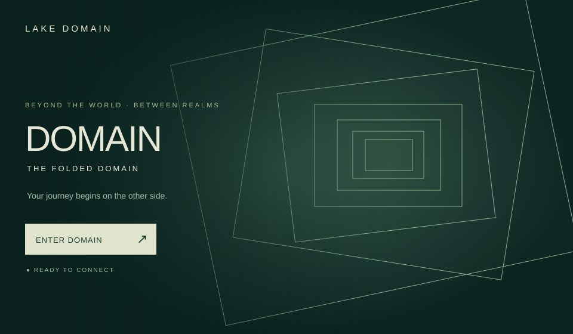
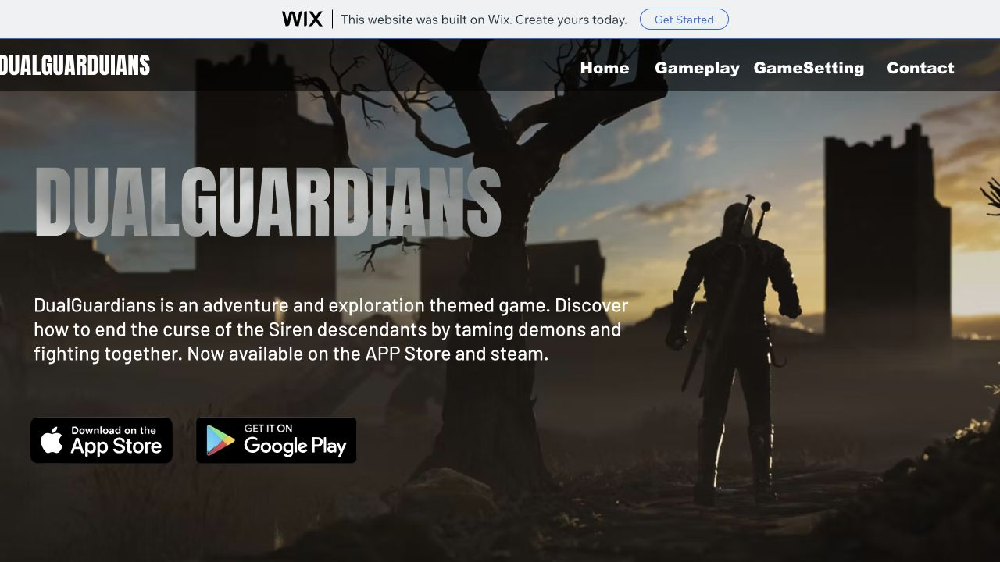
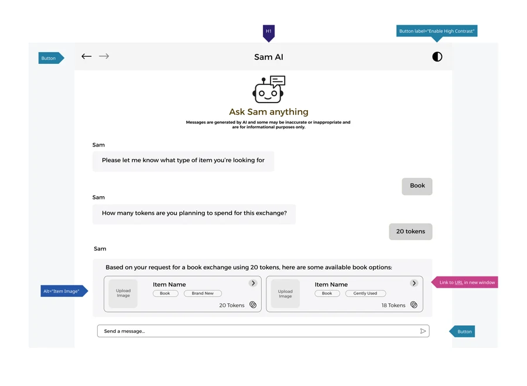

你好，我是
墨尔本大学信息技术硕士（人机交互）在读墨尔本大学用户体验设计学士毕业
桌上放着我的想法，随意打开看看。
墨尔本大学人机交互硕士在读 · 墨尔本大学用户体验设计学士
我的 APP 设计

点开图标，直接体验可操作原型。
电脑里的一些探索



暂时没有匹配的作品，换个词试试。
设计 × 技术 × 艺术的交汇处。
墨尔本大学信息技术硕士（人机交互）在读，墨尔本大学用户体验设计学士毕业。
我在数字体验、实体交互与视觉创作之间探索，把日常观察变成可以使用、触碰和感受的作品。
把声音，收进设计。
Huijing Gong · 绘画与平面
翻阅作品目录 · 点击封面进入完整作品